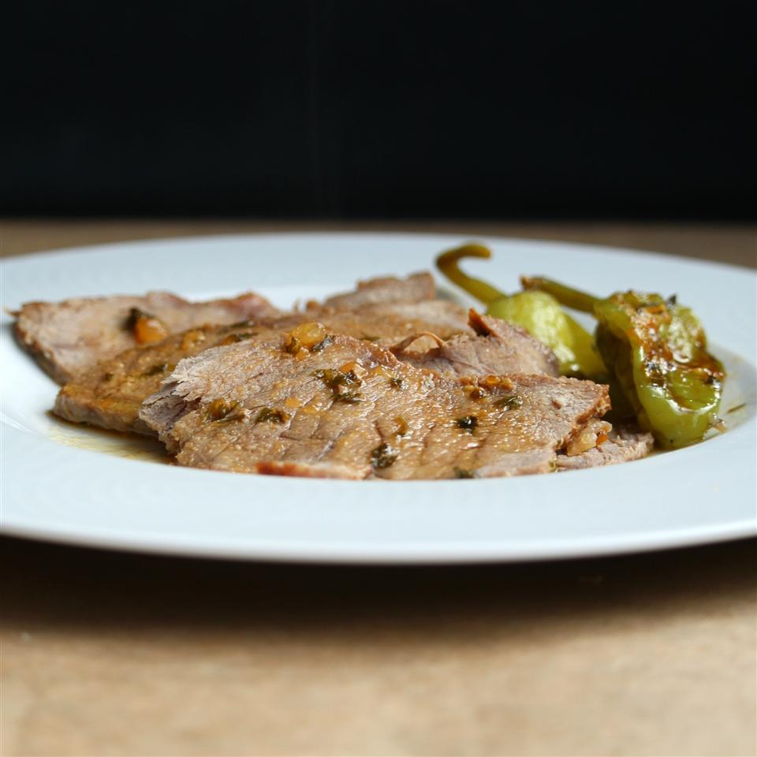

This recipe is really popular right now. I mix the ranch mix and au jour mix with 2 cups of water and pour in.
I add 10 peperoncinis and about 3 tablespoons of thr peperoncini juice and then put a half of stick of butter on top.
I cook on low overnight. The next day i serve over rice or serve on fresh french bread with cheese. Always a hit.
Thanks for sharing your recipe.Place roast in a slow cooker.
Form a pocket in the top of roast and place butter, pepperoncini peppers, ranch dressing mix, and au jus mix in the pocket.